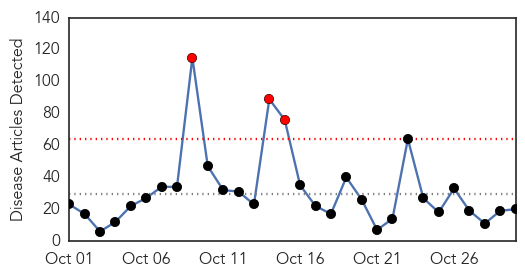
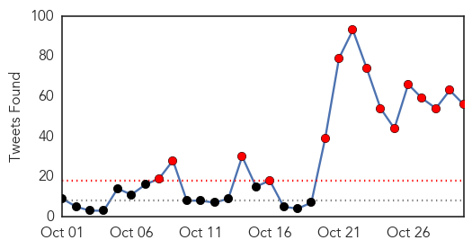
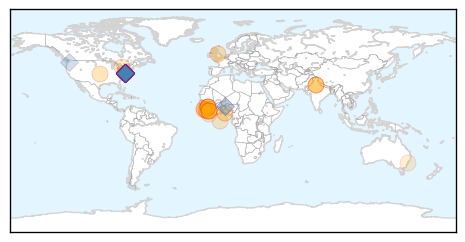
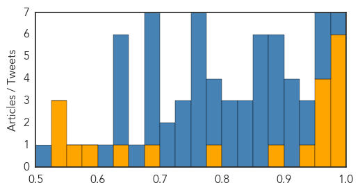

Toggle navigation
Early Warning
Daily Alerts
Ebola
Oct 30, 2015
Compare to:
-
Dengue Fever
Hemmorhagic Fever
Mold/Fungal Infection
Influenza
Meningitis
Pertussis / Whooping Cough
Middle East Respiratory Syndrome
Cholera
Hepatitis
Chikungunya
Yellow Fever
Bubonic Plague
West Nile Virus
Swine Flu
Measles
Unknown
Mumps
30 Day Trends
Web: 3
alerts
, 0
warnings
Twitter: 18
alerts
, 0
warnings
Top Articles:
1.000
Mystery deaths in Sierra Leone spread fear of Ebola relapses
0.997
An Epidemic Every Year
0.997
J&J starts vaccine trial in Sierra Leone, even as Ebola fades
0.995
Politico SL News Sierra Leone toughens Ebola border screening with Guinea
0.993
Remembering Adadevoh and the Ebola victory
0.977
Ebola: burying the bodies
0.970
Dozens of Sierra Leonean Medical Experts trained on Disease Control and Prevention in China
0.969
International group reviews politics of Ebola response
0.956
A Persistent Fight
0.955
United Nations World Food Programme - Fighting Hunger Worldwide
0.933
Dozens of Sierra Leonean Medical Experts trained on Disease Control and Prevention in China
0.899
impact of the disease is far from over
0.788
What happens to an Ebola clinic when epidemic moves on? - Liberia
0.695
Liberian VP thanks Minnesotans for support during Ebola crisis
0.632
WHO gets it wrong again: As with SARS and H1N1, its processed-meat edict went too far
0.590
LIBERIA: Gov’t Approves US$1000,000.00 For Bassa Ebola Fight, As Superintendent Urges Leaders To Report Cases
0.559
India,Sierra Leone, to scale up ties
0.549
India, Sierra Leone Scale Up Ties
0.538
What's killing the children of Freetown? Because it's not Ebola.
0.531
Foreign troops helped defeat Ebola outbreak
Top Tweets:
Showing top 50 tweets...
1.000
Ebola virus فيروس الأيبولا - https://t.co/FeJD4rp4W0 ebola
0.997
Ebola Outbreak – Guinea Records 9 - https://t.co/EPopAApGDu ebola
0.997
Dr. Nahid Bhadelia tackles Ebola - https://t.co/2yp2E38OLW ebola
0.997
CDC issues Ebola outbreak update - https://t.co/jClSgpUOYx ebola
0.996
Blocking Ebola virus budding by regulating calcium signaling - Medical Xpress https://t.co/3VwXYh3HEC ebola EVD
0.995
ebola - https://t.co/gIfXx05FnU ebola
0.995
Ebola - https://t.co/RB2GMwuSLG ebola
0.995
Ebola - https://t.co/FjePkxTYoP ebola
0.991
Blocking Ebola virus budding by regulating calcium signaling - https://t.co/5BXkdBHV0f ebola
0.990
Penn study blocks ebola virus budding by regulating calcium signaling - https://t.co/FhUbBcHIQY ebola
0.988
Ebola threat - Dr. Ida Bergstrom explains - https://t.co/ELI5T6xxhR ebola
0.988
Deforestation blamed for Ebola outbreak - https://t.co/makRe5fxGs ebola
0.987
Guinea Agribusiness: Sector recovering after Ebola epidemic - https://t.co/pp7b5lDsBH ebola
0.985
Foreign troops helped defeat Ebola outbreak - https://t.co/UtYeD2CqPf ebola
0.982
EBOLA! HERE!! WEST AFRICAN REFUGEE HAS EBOLA symptoms FEVER, VOMITING DIARRHEA https://t.co/d8pg9qn1GH
0.982
EBOLA! HERE!! WEST AFRICAN REFUGEE HAS EBOLA symptoms FEVER, VOMITING DIARRHEA https://t.co/d8pg9qn1GH
0.982
EBOLA! HERE!! WEST AFRICAN REFUGEE HAS EBOLA symptoms FEVER, VOMITING DIARRHEA https://t.co/d8pg9qn1GH
0.982
EBOLA! HERE!! WEST AFRICAN REFUGEE HAS EBOLA symptoms FEVER, VOMITING DIARRHEA https://t.co/d8pg9qn1GH
0.982
EBOLA! HERE!! WEST AFRICAN REFUGEE HAS EBOLA symptoms FEVER, VOMITING DIARRHEA https://t.co/d8pg9qn1GH
0.982
EBOLA! HERE!! WEST AFRICAN REFUGEE HAS EBOLA symptoms FEVER, VOMITING DIARRHEA https://t.co/d8pg9qn1GH
0.982
EBOLA! HERE!! WEST AFRICAN REFUGEE HAS EBOLA symptoms FEVER, VOMITING DIARRHEA https://t.co/d8pg9qn1GH
0.982
EBOLA! HERE!! WEST AFRICAN REFUGEE HAS EBOLA symptoms FEVER, VOMITING DIARRHEA https://t.co/d8pg9qn1GH
0.982
EBOLA! HERE!! WEST AFRICAN REFUGEE HAS EBOLA symptoms FEVER, VOMITING DIARRHEA https://t.co/d8pg9qn1GH
0.982
EBOLA! HERE!! WEST AFRICAN REFUGEE HAS EBOLA symptoms FEVER, VOMITING DIARRHEA https://t.co/d8pg9qn1GH
0.982
EBOLA! HERE!! WEST AFRICAN REFUGEE HAS EBOLA symptoms FEVER, VOMITING DIARRHEA https://t.co/d8pg9qn1GH
0.982
EBOLA! HERE!! WEST AFRICAN REFUGEE HAS EBOLA symptoms FEVER, VOMITING DIARRHEA https://t.co/d8pg9qn1GH
0.979
Guinée : Ebola continue encore à faire des victimes… - https://t.co/nTgGRbso8U ebola
0.978
An epidemic much larger than Ebola - https://t.co/gRUhYaKN0k ebola
0.974
Le virus Ebola n'est pas encore derrière nous, mais la situation d'urgence est passée. https://t.co/KQPi317vTR Africaagainstebola
0.974
Ebola: au tour du Canada de faire appel à Medicago - https://t.co/PI2sspo7En ebola
0.974
3 New Cases of Ebola Emerge in Guinea - https://t.co/4xYGw9BnfR ebola
0.973
Ebola shows global health governance weak - https://t.co/7TlT9llSQj ebola
0.969
Penn study blocks ebola virus budding by regulating calcium signaling ... - EurekAlert (press release) https://t.co/H2ceu4X7Mt ebola EVD
0.967
Guinea Records 3 More Ebola Cases Related To Woman Whose Body Not Properly Handled After ... - https://t.co/2h21mNXNGZ ebola
0.966
Guinea records three new cases of Ebola - https://t.co/36Se0tY2Hh ebola
0.965
Flipnote by Ebola-San - https://t.co/6IN7lwodou ebola
0.962
International group reviews politics of Ebola response - https://t.co/AJ15jo79FZ ebola
0.960
Award winning Ebola response - https://t.co/iVVZLpMAO8 ebola
0.959
Nurse Quarantined During Ebola Panic Sues Chris Christie - https://t.co/EetMZyhW46 ebola
0.947
Blocking Ebola virus budding by regulating calcium signaling - Medical Xpress https://t.co/VpYSjoSnBY
0.934
Frieden: Three lessons from Ebola - https://t.co/gugz6Eix4S ebola
0.933
The FDA Learned Nothing from Ebola - https://t.co/g2pM7XOclS ebola
0.926
MSU Professor Shares Story Of Ebola Aid - https://t.co/0De2rMzIn8 ebola
0.925
FDA Should Learn From Ebola Epidemic, Take Action To Respond To Chikungunya, Other NTDs - https://t.co/qYgWtBcdUL ebola
0.924
Nurse quarantined over Ebola has no plan to sue in Maine - https://t.co/CmooGZohNb ebola
0.917
MSU Professor Shares Story Of Ebola Aid - KAUZ-TV https://t.co/Eq6wxf8OFk ebola EVD
0.907
Attacking Ebola Aftershocks: Natural History Study Vital - https://t.co/7mbS8spTBg ebola
0.907
Attacking Ebola Aftershocks - Natural History Study Vital - https://t.co/NtIuIuEUXy ebola
0.901
Nurse quarantined over Ebola fears sues Gov. Chris Christie - https://t.co/XFbPBO6vtm ebola
0.899
One year after Ebola crisis: impact of the disease is far from over - https://t.co/xM63n86GDs ebola
Web/News Articles

Tweets

Article Locations

Article Confidences
